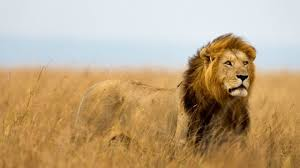

ZEBRA

Zebras are African equines with distinctive black-and-white striped coats.
There are three living species: the Grévy's zebra, plains zebra,
and the mountain zebra.Zebras share the genus Equus with horses
and asses, the three groups being the only living members of the
family Equidae.
Gestation period:12 months
Mass:280 kg
Speed:65 km/h
Length:2.4 m
Class:Mammalia
Family:Equidae
CHEETAH

The cheetah is a large cat native to Africa and Southwest Asia.
It is the fastest land animal, capable of running at 80 to 98 km/h,
as such has evolved specialized adaptations for speed, including a
light build, long thin legs and a long tail.
Speed: 80–130 km/h (Running, Estimated)
Conservation status: Vulnerable (Population decreasing)
Scientific name: Acinonyx jubatus
Height: 67–94 cm (At Shoulder
Family: Felidae
Kingdom: Animalia
BUFALLO

The African buffalo is a large sub-Saharan African bovine.
There are five subspecies that are recognized as being valid.
Syncerus caffer caffer, the Cape buffalo, is the nominotypical
subspecies,and the largest one, found in Southern and East Africa.
Mass: 300 – 900 kg (Adult)
Trophic level: Herbivorous
Gestation period: 11 months
Conservation status: Least Concern (Population decreasing)
Class: Mammalia
Family: Bovidae
Kingdom: Animalia
LION

The lion is a large cat of the genus Panthera native to Africa and India.
It has a muscular, broad-chested body; short, rounded head; round ears;
and a hairy tuft at the end of its tail. It is sexually dimorphic;
adult male lions are larger than females and have a prominent mane.
Speed: 80 km/h (Maximum, In Short Bursts)
Height: 1.2 m (Male, Adult, At Shoulder), 90 – 110 cm (Female, Adult, At Shoulder)
Length: 1.8 – 2.1 m (Male, Head and body), 1.6 – 1.8 m (Female, Head and body)
Lifespan: 15 – 16 years (Female, Adult, In the wild), 8 – 10 years (Male, Adult, In the wild)
Scientific name: Panthera leo
Rank: Species
Mass: 190 kg (Male, Adult), 130 kg (Female, Adult)